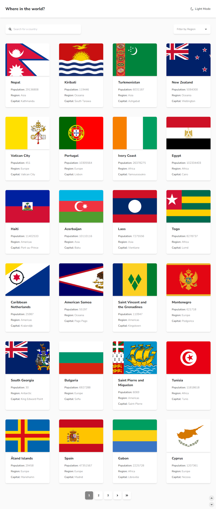
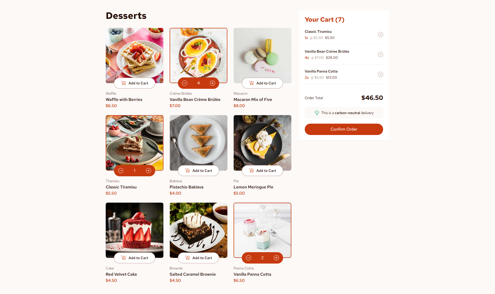
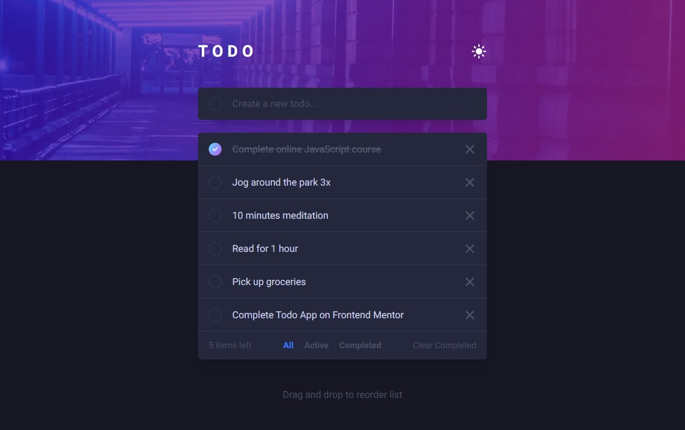

Olá, eu sou Jean Dias
Sou um Desenvolvedor Web apaixonado por criar experiências digitais incríveis e funcionais.
Veja meus projetosSobre Mim
Me chamo Jean, tenho 26 anos e moro em Sorocaba, SP. Atualmente, estou mergulhado no universo da Engenharia de Software na Uninter, mas minha paixão por tecnologia vai muito além da sala de aula.
Sou fascinado em dar vida a ideias através do desenvolvimento de aplicativos e encontrar soluções criativas para os mais diversos desafios.
Minhas Habilidades
Meus Projetos

REST Countries API with color theme switcher
Interface para explorar dados de países, permitindo busca e filtragem por região. Implementado com um alternador de tema (light/dark) para melhor experiência do usuário.

Product list with cart
Aplicação que demonstra a lógica de um carrinho de compras. As funcionalidades incluem adicionar/remover itens, ajustar quantidades e visualizar um modal de confirmação do pedido.

Todo App
Aplicação to-do com design responsivo, tema claro/escuro e funcionalidade de drag-and-drop para reordenar tarefas. Os dados persistem no navegador através do local storage.
Vamos Conversar!
Estou sempre aberto a novas oportunidades e colaborações. Sinta-se à vontade para entrar em contato.
Enviar E-mail